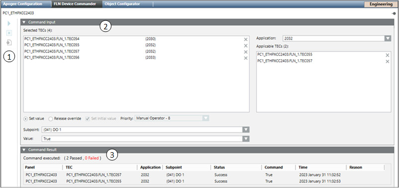

The APOGEE FLN Device Commander allows you to issue a single command to be applied to a selected group of points in the building system. You can command a set of BACnet FLN devices or TEC subpoints to specific values in one single operation. The devices can also reside in different networks and systems.
Subpoint Commanding
When you command a subpoint, you put the subpoint under operator control. Operator control overrides the sequence of operation set up in the PPCL program that controls the panels. In order for the controller or PPCL to command the subpoint, you must release the point so that it returns to NONE priority.
You can use the FLN Device Commander to command a group of subpoints that share a common application type. For example, you can command the Day Mode Cooling Setpoint (Day CLG STPT) to 82.0 Deg F for all devices of a VAV application type 2022.
Subpoint Release
You can use the FLN Device Commander to release a group of FLN and TEC devices. When you release a subpoint, the operator override is removed from the subpoint so that the point can be commanded by the standard PPCL program.
You can release a group of subpoints which share a common application type.
Selecting Devices
To command an application subpoint across multiple devices, you can select and display the devices in the FLN Device Commander by selecting the following nodes in System Browser:
Network – All FLN devices in the network display.
Panel – All the devices in the panel display.
Device – The device displays.
NOTE: You cannot combine P2 and BACnet devices in the FLN Device Commander. Mulit-Command and Release of P2 or BACnet FLN must be done separately.
Multi-Selection and Drag-and-Drop
To display multiple devices, you can use the CTRL key to select and then drag-and-drop the devices into the FLN Device Commander. However, you cannot drag-and-drop a network or a panel.
Add an FLN
From the Toolbar, you can add multiple FLNs to an APOGEE panel. You can then add multiple TEC devices to your FLNs.
FLN Device Commander Workspace
The APOGEE FLN Device Commander allows you to view and command the current value of a subpoint that appears across multiple devices and applications. You can also release the subpoints, and for BACnet subpoints, set the initial value or change the priority, as well.

In System Browser, clicking on a network, panel, or device node displays the APOGEE FLN Device in the Primary pane.
Item
Description
1
FLN Device Commander Toolbar Includes the Execute and Delete buttons.
Execute button – Issues the selected global command for the subpoint(s) in the Applicable TECs list using the value entered in the Value field in the Command Input section.
Abort button – Cancels execute command when it is running. This selection is only available while commanding is in progress.
Add FLN button – Displays a dialog box for entering the FLN Number. Once saved, an FLN folder is created under the selected APOGEE panel.
2
Command Input Section This section allows you to select which FLN or TEC devices(s) subpoints you want to command, select the Application, and then command a subpoint from the device.
Selected TECs – Displays the selected FLN devices or TECs and their associated applications that you want to command. If you want to remove a device from the list, click the X next to the device to remove it.
Application – Click the drop-down menu to select a single application number in the FLN or TEC devices that you want to command. You can also type the application number into this field.
Applicable TECs – Displays a list of the devices from the Selected TECs pane that contain the pre-programmed application selected in the Application field. These are the devices that will receive the commanding. If you want to remove a device from the list, click the X next to the device to remove it.
Set Value – When enabled, allows you to command the current Value of the selected Subpoint associated with the devices listed in the Applicable TECs pane.
Release Override – When enabled, the command allows you to release the current Value of the selected Subpoint associated with the Applicable TECs.
Set Initial Value – This check box is only available when a BACnet device is selected in the Selected TECs Application field. Select this check box if you want the value entered in the Value field to be set as the initial value for the BACnet subpoint when the command is issued. Clear this check box if you do not want to change the initial value for the BACnet device.
Priority – For BACnet devices only. Allows you to set the BACnet command priority for the selected Subpoint.
Subpoint – Allows you to select the subpoint that you want to command. The Subpoint field lists the subpoints available for the selected Application.
Value – Allows you to set the value for the FLN or TEC device. You can either type a value or select a value from the drop-down menu. The value that you can set depends on the type of subpoint that is being commanded and the available device range.
3
Command Result Section Displays a log of point commands that were issued since the last time the log was cleared.
Panel – Name of the field panel that contains the point for which a command was issued.
TEC – Name of the device that contains the point for which a command was issued.
Application – Number of the application pre-programmed in the FLN or TEC device for which a command was issued.
Subpoint – Name of the subpoint for which a command was issued.
Command – Command type of value change that was issued for the point.
Time – Time, in 24 hour format that the command was issued.
Status – Displays a Success or Failed status indicating whether or not the point command was issued successfully or not.
Reason – If the Status field displays:
Success – This column is blank.
Failed – The column displays an explanation for the failed point command.